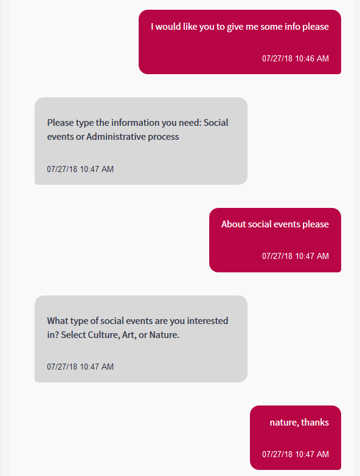
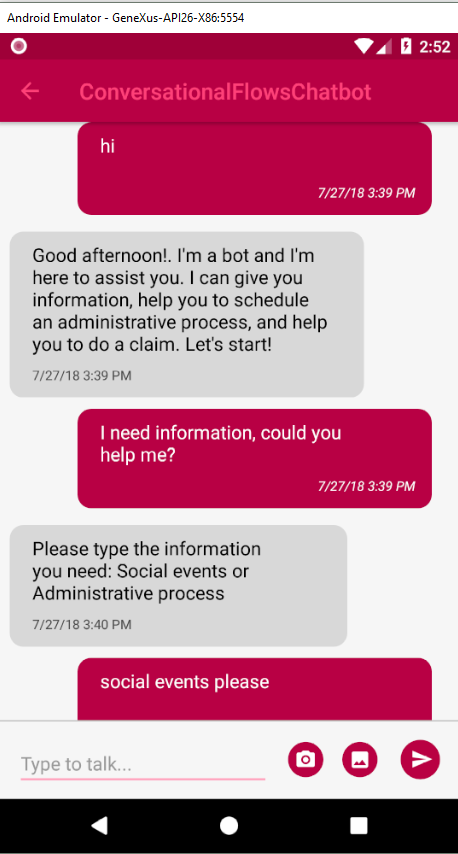

Chatbots, as their name suggests, are a combination of chats and bots. Bots refer to software designed to automate actions. They have existed for quite some time; for example, they are used in phone support systems and even video games. While chats are communication between two or more people, chatbots are computer programs designed to "simulate" conversations with human users. Web Mobile How can a chatbot understand a person?In general, they are based on Natural Language Processing (NLP), a field of Artificial Intelligence that studies the interaction that takes place between people, using written and spoken language, and computer systems. Artificial intelligence (AI) allows Chatbots to be flexible in terms of the user input they can accept. AI also allows them to improve the more they are used. However, there is another type of chatbots that doesn't require adding the complexity of AI. They are Scripted Chatbots. Today, most chatbots are either accessed via virtual assistants, messaging apps such as Facebook Messenger or WeChat, or via individual organizations' apps and websites. Chats are used in many fields, including customer support, education, entertainment, finance, food, games, health, travel, etc.
|